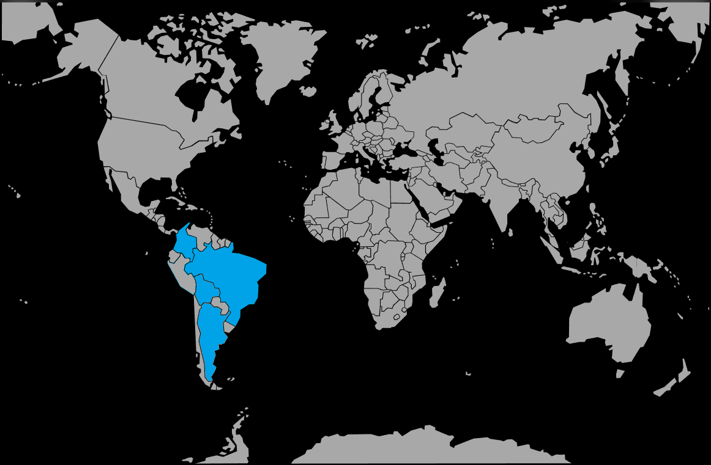

Systématique
- Ordre : Cichliformes
- Famille : Cichlidae
- Sous-famille : Cichlinae
- Genre : Mikrogeophagus
- Espèce : Mikrogeophagus altispinosus

Mikrogeophagus altispinosus, appelé aussi ramirezi bolivien, est un petit cichlidé nain sud-américain apprécié pour son tempérament calme et sa relative robustesse.
Les adultes mesurent 5 à 8 cm, avec un corps allongé, une tête fine et des nageoires dorsale et anale étirées chez les mâles.
Ce cichlidé occupe principalement la zone de fond et de mi-fond, où il fouille le substrat à la recherche de nourriture, souvent en couple ou en petit groupe.
Globalement paisible, il peut toutefois défendre un petit territoire en période de reproduction et doit être associé à des espèces calmes de taille similaire, évitant les poissons trop vifs ou agressifs.
Reproduction : pondeur sur substrat découvert ou légèrement abrité ; le couple choisit une pierre plate ou une surface dégagée, y dépose les œufs puis assure une garde active.
Les parents ventilent les œufs, déplacent parfois les larves et accompagnent les alevins dans leurs premiers déplacements, surtout si le bac est calme et bien structuré.
Dimorphisme sexuel : mâle plus grand, plus coloré, avec nageoires dorsale et anale plus développées ; femelle plus petite, présentant souvent un ventre rosé en période de reproduction.
Biotope : affluents lents et zones calmes du haut bassin du Rio Madeira en Bolivie et au Brésil, sur substrat sableux parsemé de feuilles et de racines, dans des eaux peu profondes et doucement brassées.
Répartition
Origine naturelle :
- Amérique du Sud : Bolivie et Brésil, principalement dans le haut bassin du Rio Madeira (ríos Mamoré, Guaporé, Orthon, etc.).
- Zones calmes peu profondes, avec substrat fin, végétation et litière de feuilles.
L’espèce occupe la zone de fond et mi-fond, fouillant le sol à la recherche de micro-proies et de débris organiques.
Paramètres de maintenance
Température : 22 à 27 °C.
pH : 6,0 à 7,5.
GH : 2 à 12 °dGH, eau douce à moyennement dure.
Courant : faible, avec filtration douce et stable.
Volume conseillé : ≥ 100–120 L pour un couple ou un petit groupe, avec grande surface au sol et substrat fin.
Régime alimentaire
Régime : omnivore à tendance microcarnivore ; accepte granulés de petite taille, paillettes de qualité, nourriture congelée (artémias, daphnies, vers de vase) et compléments végétaux.
Une alimentation variée distribuée en petites quantités, incluant régulièrement des proies vivantes ou congelées, favorise une bonne santé, des couleurs soutenues et conditionne le couple à la reproduction.